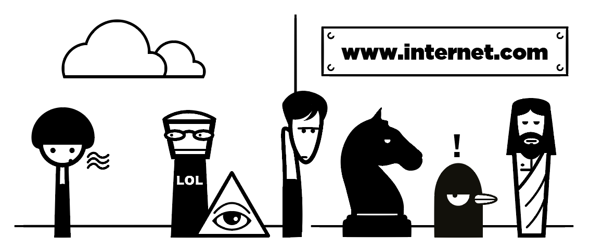

Živjo, kaj pa ti tukaj, kar sam/-a na internetu?
Malo raziskujem, ja. Kdo pa si ti?
Sem Šepetalka. Včasih šepetam konjem, včasih pa naključnim mimoidočim, ki jih srečam na internetu.

Potem pa mi morda lahko pomagaš. Muči me nov Zakon o tujcih. Morda veš kaj o tem?
Seveda, kaj pa te zanima?
Hmm … za začetek … Kaj sploh je?
Gre za zakon, ki ga je Državni zbor sprejel konec januarja. Zakon DZ omogoča, da razglasi t.i. "spremenjene razmere na področju migracij".
Mimogrede, zakon je zelo problematičen.
Njegova vsebina je v nasprotju tako s slovensko ustavo kot z mednarodnim pravom in pravom EU.
Katere mednarodne predpise pa krši besedilo?
Ženevsko konvencijo o statusu beguncev, Evropsko konvencijo o varstvu človekovih pravic in temeljnih svoboščin ter Dublinsko uredbo.
Mi lahko pojasniš bolj konkretno?
Slovenija z ukrepom krši pravico do učinkovitega azilnega postopka, prepoved kolektivnih izgonov in prisilnih vračanj, pravico do učinkovitega pravnega sredstva ter prepoved vračanja.
Kako pa je zakon v nasprotju s slovensko ustavo?
Slovenska ustava resda dovoljuje, da se pravice in svoboščine omeji, vendar le v primeru razglasitve vojnega ali izrednega stanja. Izredne razmere so lahko razglašene, ko “velika in splošna nevarnost ogroža obstoj države”.
Hmmm. Ampak meni se zdi, da zdaj, ko na mejah tako rekoč ni več beguncev, nismo ravno ogroženi ...
V obrazložitvi predloga novele zakona se odgovorni sklicujejo na nepredvidljivo naravo migracij ter apokaliptični scenarij, po katerem naj bi se v Sloveniji soočali z “različnimi nadnacionalnimi viri ogrožanja”.
Namiguješ, da gre za načrtno spodbujanje strahu?
Jap. Z zavajanjem je še po sprejetju novele nadaljeval tudi premier Cerar, ki je javnost strašil z novo migracijsko potjo čez Jadransko morje proti Istri, o kateri pa niso nič vedeli niti na slovenski niti na hrvaški policiji.
Ampak, hej, kaj pa če bo beguncev res ogromno? A ni smiselno, da vlada pripravi neko pravno podlago?
Saj jo je imela že brez tega zakona! Pravno podlago zagotavljajo spremenjen Zakon o mednarodni zaščiti, Dublinska uredba ter bilateralni sporazum o vračanju. Zakon o tujcih je skregan z vsemi dogovorjenimi in zakonitimi postopki.
Grozljivo :( Kdo pa je dopustil, da je bil tak ukrep sprejet?
Na podlagi predloga Ministrstva za notranje zadeve je bila novela po nujnem postopku brez javne razprave sprejeta s strani matičnega delovnega telesa, Državnega zbora in Državnega sveta, v njegovo ustreznost pa verjame tudi predsednik države Borut Pahor.
Zahtevo za oceno ustavnosti in zakonitosti novele lahko na ustavno sodišče vloži varuhinja človekovih pravic Vlasta Nussdorfer. Zaenkrat se malo izmika obljubi, da bo to storila. Najbrž ne bo škodilo, če malo pritisnemo nanjo.
Povej mi, kaj naj storim jaz!
Pridruži se podpisnikom spodnje peticije, jaz pa ji jo posredujem.